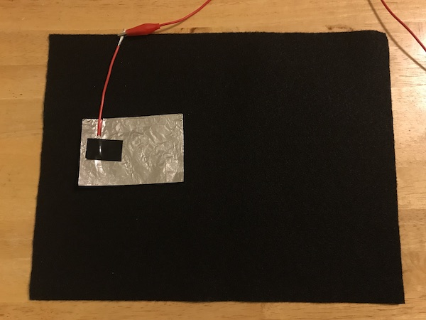
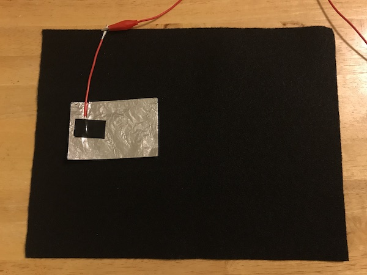

Step 5
Connect one of the Makey Makey wires with the alligator clips to one of the arrow keys on the Makey Makey board. Connect the other end to the wire you just added to your aluminum foil.
Connect one of the Makey Makey wires with the alligator clips to one of the arrow keys on the Makey Makey board. Connect the other end to the wire you just added to your aluminum foil.
